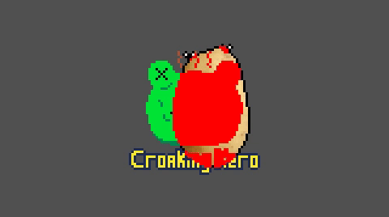
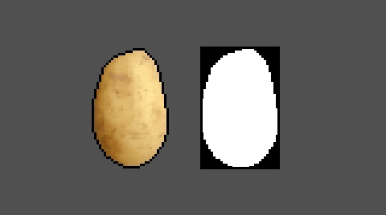
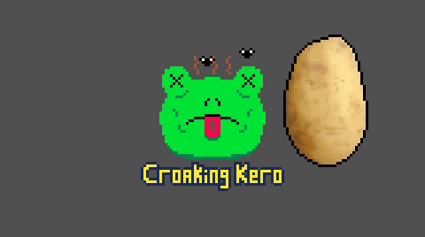
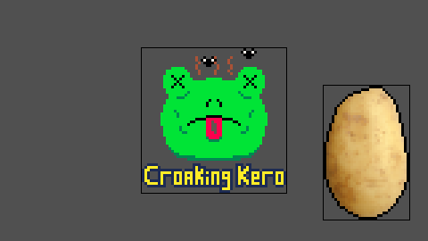
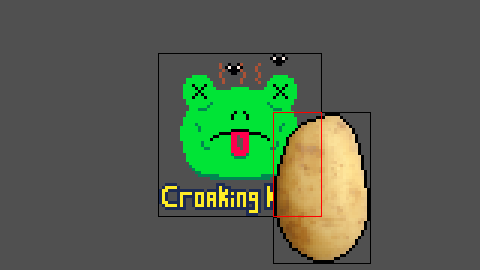
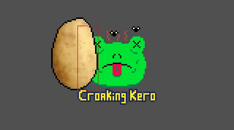

Pixel-Perfect Collision Detection in C
 This tutorial is also available as a video. In this tutorial I’ll show you how to detect collisions on a per-pixel basis. Collision response is unique to each game, so I’ll save that for my next tutorial where I’ll demonstrate player movement and collisions in my 2d platformer. Download the code here: pixel collision detection.zip Build on Windows with build.bat, or Linux with build.sh. This creates the binary a.exe or a.out, respectively. Note: This code is written using my WIP osinterface library, which lets it compile and run on Windows and Linux (I don't own a Mac yet). Feedback on osinterface is welcome. main.c#include <stdlib.h>
#include <stdio.h>
#define OSINTERFACE_LINUX_USE_OPENGL
#define OSINTERFACE_FRAME_BUFFER_SCALED
#include "osinterface.h"
#include "PRINT_ERROR.h"
#include "loadbmp.h"
#define RESOLUTIONX 160
#define RESOLUTIONY 90
#define ABS(a) ((a) < 0 ? -(a) : (a))
#define FLOOR(a) ((a) < 0 ? (int)((a)-1.0) : (int)(a))
#define MAX(a, b) ((a) > (b) ? (a) : (b))
#define MIN(a, b) ((a) < (b) ? (a) : (b))
typedef struct {
union {
struct { uint8_t b, g, r, a; };
uint32_t u32;
};
} pixel_t;
typedef struct {
union { int w, width; };
union { int h, height; };
union { pixel_t *p, *pixels; };
} sprite_t;
typedef struct {
union { int w, width; };
union { int h, height; };
union { bool *p, *pixels; };
} collision_mask_t;
sprite_t frame_buffer;
bool CheckCollision (collision_mask_t a, int ax, int ay, collision_mask_t b, int bx, int by);
void HighlightCollisions (collision_mask_t a, int ax, int ay, collision_mask_t b, int bx, int by);
bool CollisionMaskFromSprite (collision_mask_t *mask, sprite_t *sprite);
void BlitAlpha10(sprite_t *source, sprite_t *destination, int x, int y);
int main (int argc, char **argv) {
frame_buffer.width = RESOLUTIONX;
frame_buffer.height = RESOLUTIONY;
frame_buffer.pixels = malloc (frame_buffer.width * frame_buffer.height * sizeof (frame_buffer.pixels[0]));
os_SetWindowFrameBuffer ((uint32_t*)frame_buffer.pixels, frame_buffer.width, frame_buffer.height);
EXIT_IF (!os_Init ("Pixel collision detection"), 1);
sprite_t potato, croaking_kero;
EXIT_IF (!LoadBMP (&potato.w, &potato.h, (uint32_t**)&potato.p, "potato.bmp"), 2);
EXIT_IF (!LoadBMP (&croaking_kero.w, &croaking_kero.h, (uint32_t**)&croaking_kero.p, "croakingkero.bmp"), 2);
int kerox = (frame_buffer.w - croaking_kero.w) / 2;
int keroy = (frame_buffer.h - croaking_kero.h) / 2;
collision_mask_t mask_potato, mask_kero;
EXIT_IF (!CollisionMaskFromSprite (&mask_potato, &potato), 2);
EXIT_IF (!CollisionMaskFromSprite (&mask_kero, &croaking_kero), 2);
bool quit = false;
while (!quit) {
os_event_t event;
do {
event = os_NextEvent ();
switch (event.type) {
case os_EVENT_KEY_PRESS: {
switch (event.key) {
case os_KEY_ESCAPE: {
quit = true;
} break;
case os_KEY_ENTER: {
if (os_public.keyboard[os_KEY_LALT] || os_public.keyboard[os_KEY_RALT]) {
os_Fullscreen (!os_public.window.is_fullscreen);
}
} break;
default: break;
}
} break;
case os_EVENT_QUIT: {
quit = true;
} break;
default: break;
}
} while (event.type != os_EVENT_NULL);
memset (frame_buffer.pixels, 80, frame_buffer.width * frame_buffer.height * sizeof (frame_buffer.pixels[0]));
os_vec2i mouse;
os_WindowPositionToScaledFrameBufferPosition (os_public.mouse.p.x, os_public.mouse.p.y, &mouse.x, &mouse.y);
mouse.x -= potato.w/2;
mouse.y -= potato.h/2;
mouse.x = MAX (0, MIN (frame_buffer.width - potato.w, mouse.x));
mouse.y = MAX (0, MIN (frame_buffer.height - potato.h, mouse.y));
BlitAlpha10 (&croaking_kero, &frame_buffer, kerox, keroy);
BlitAlpha10 (&potato, &frame_buffer, mouse.x, mouse.y);
HighlightCollisions (mask_potato, mouse.x, mouse.y, mask_kero, kerox, keroy);
os_DrawScreen ();
os_WaitForScreenRefresh ();
}
}
bool CheckCollision (collision_mask_t a, int ax, int ay, collision_mask_t b, int bx, int by) {
int aleft, aright, abottom, atop;
int bleft, bright, bbottom, btop;
int left, right, bottom, top;
int columns, rows;
aleft = ax; aright = aleft + a.w-1;
abottom = ay; atop = abottom + a.h-1;
bleft = bx; bright = bleft + b.w-1;
bbottom = by; btop = bbottom + b.h-1;
if (aleft > bright || aright < bleft || abottom > btop || atop < bbottom)
return false; // Collision box areas do not overlap
// Bounding box of overlap of two masks
left = MAX (aleft, bleft);
right = MIN (aright, bright);
bottom = MAX (abottom, bbottom);
top = MIN (atop, btop);
columns = right - left + 1;
rows = top - bottom + 1;
aleft = left - aleft;
abottom = bottom - abottom;
bleft = left - bleft;
bbottom = bottom - bbottom;
for (int y = 0; y < rows; ++y) {
for (int x = 0; x < columns; ++x) {
if (a.p[(aleft + x) + (abottom + y) * a.w] &&
b.p[(bleft + x) + (bbottom + y) * b.w])
return true;
}
}
return false;
}
void HighlightCollisions (collision_mask_t a, int ax, int ay, collision_mask_t b, int bx, int by) {
int aleft, aright, abottom, atop;
int bleft, bright, bbottom, btop;
int left, right, bottom, top;
int columns, rows;
aleft = ax; aright = aleft + a.w-1;
abottom = ay; atop = abottom + a.h-1;
bleft = bx; bright = bleft + b.w-1;
bbottom = by; btop = bbottom + b.h-1;
if (aleft > bright || aright < bleft || abottom > btop || atop < bbottom)
return; // Collision box areas do not overlap
// Bounding box of overlap of two masks
left = MAX (aleft, bleft);
right = MIN (aright, bright);
bottom = MAX (abottom, bbottom);
top = MIN (atop, btop);
columns = right - left + 1;
rows = top - bottom + 1;
aleft = left - aleft;
abottom = bottom - abottom;
bleft = left - bleft;
bbottom = bottom - bbottom;
for (int y = 0; y < rows; ++y) {
for (int x = 0; x < columns; ++x) {
if (a.p[(aleft + x) + (abottom + y) * a.w] &&
b.p[(bleft + x) + (bbottom + y) * b.w])
frame_buffer.p[(bx + bleft + x) + (by + bbottom + y) * frame_buffer.w].u32 = 0xffff0000;
}
}
}
bool CollisionMaskFromSprite (collision_mask_t *mask, sprite_t *sprite) {
mask->w = sprite->w;
mask->h = sprite->h;
int total = mask->w * mask->h;
mask->p = malloc (total);
if (!mask->p) {
PRINT_ERROR ("Failed to allocate mask memory");
return false;
}
bool *m = mask->p;
pixel_t *s = sprite->p;
while (total--) {
*m = s->a == 0 ? 0 : 1;
++m; ++s;
}
return true;
}
void BlitAlpha10(sprite_t *source, sprite_t *destination, int x, int y) {
int left, right, bottom, top;
left = MAX (0, x);
right = MIN (destination->w-1, x+source->w-1);
bottom = MAX (0, y);
top = MIN (destination->h-1, y+source->h-1);
for(int y2 = bottom; y2 <= top; ++y2) {
for(int x2 = left; x2 <= right; ++x2) {
pixel_t source_pixel = source->p[x2-x + (y2-y)*source->w];
if (source_pixel.a != 0)
destination->p[x2 + y2*destination->w] = source_pixel;
}
}
}
Code Walkthrough
 When checking for collision between two sprites, the colour information doesn’t matter, so we can create a collision mask representing each sprite which stores a 0 for empty pixels and a 1 for solid. This also gives us flexibility to make parts of a sprite non-colliding by editing the mask. Here’s a simple function that loops through a sprite’s pixels and creates a mask based on it.bool CollisionMaskFromSprite (collision_mask_t *mask, sprite_t *sprite) {
mask->w = sprite->w;
mask->h = sprite->h;
int total = mask->w * mask->h;
mask->p = malloc (total);
if (!mask->p) {
PRINT_ERROR ("Failed to allocate mask memory");
return false;
}
bool *m = mask->p;
pixel_t *s = sprite->p;
while (total--) {
*m = s->a == 0 ? 0 : 1;
++m; ++s;
}
return true;
}
So we copy the width and height of the sprite and allocate the appropriate number of bytes for the mask. Then we create a pointer to the first pixel in the sprite and the first bool in the mask. We iterate a number of times equal to the total number of pixels, checking the alpha component of the sprite pixel to determine whether the corresponding mask pixel should be solid. Then we increment both pointers.
Throughout this tutorial I'll show some animations which display sprites, but are using masks for the collision checking itself.

Let's take two sprites (with masks): the Croaking Kero logo, and a potato. We need to find the area where the masks overlap, if any, then loop through the corresponding pixels in each mask and check whether they have any solid pixels in the same spot.
This CheckCollision function takes two masks, a and b, and their positions, then returns true when the masks collide and false otherwise.
bool CheckCollision (collision_mask_t a, int ax, int ay, collision_mask_t b, int bx, int by) {
int aleft, aright, abottom, atop;
int bleft, bright, bbottom, btop;
int left, right, bottom, top;
int columns, rows;
aleft = ax; aright = aleft + a.w-1;
abottom = ay; atop = abottom + a.h-1;
bleft = bx; bright = bleft + b.w-1;
bbottom = by; btop = bbottom + b.h-1;
if (aleft > bright || aright < bleft || abottom > btop || atop < bbottom)
return false; // Collision box areas do not overlap
We get the left and right pixel columns, and bottom and top rows of each mask. We can check if a’s left is right of b’s right, a’s bottom is above b’s top and so on and if any of these conditions are true, there’s no overlap and we can early out.

// Bounding box of overlap of two masks
left = MAX (aleft, bleft);
right = MIN (aright, bright);
bottom = MAX (abottom, bbottom);
top = MIN (atop, btop);
columns = right - left + 1;
rows = top - bottom + 1;
If there is an overlap, we find that box by taking the rightmost of a’s and b’s lefts, the leftmost of their rights, and so on. The number of pixel columns is equal to the right minus left + 1, and similar for rows.

aleft = left - aleft;
abottom = bottom - abottom;
bleft = left - bleft;
bbottom = bottom - bbottom;
We know how many rows and columns of the masks will be checked, but we need to translate the overlap position to corresponding starting points within each of the masks’ pixels. We do that by subtracting a’s left position from the overlap’s left, and a’s bottom position from the overlap’s bottom. The same for b.
for (int y = 0; y < rows; ++y) {
for (int x = 0; x < columns; ++x) {
if (a.p[(aleft + x) + (abottom + y) * a.w] &&
b.p[(bleft + x) + (bbottom + y) * b.w])
return true;
}
}
return false;
}
Now we iterate through the number of rows and columns, comparing the pixel at aleft + x, abottom + y and bleft + x, bbottom + y. If they’re both solid we have a collision, so we return true. If we make it through every overlapping pixel without finding two solids in the same place, we reach the end of the function and return false.

This is the most basic pixel collision detection, but from here you can make loads of custom collision functions. Perhaps you want to create a collision mask which stores all the overlapping pixels, or maybe you want to go through each row, checking the left- and right-most colliding pixels to determine the minimum horizontal movement needed to stop your masks from colliding. The combination of collision detection and response can be tailored to the needs of each game, and in my next tutorial I'll show you how I'm handling player movement and collisions in a 2D platformer.
If you've got questions about any of the code feel free to e-mail me or comment on the youtube video. I'll try to answer them, or someone else might come along and help you out. If you've got any extra tips about how this code can be better or just more useful info about the code, let me know so I can update the tutorial. Thanks to Froggie717 for criticisms and correcting errors in this tutorial. Cheers.